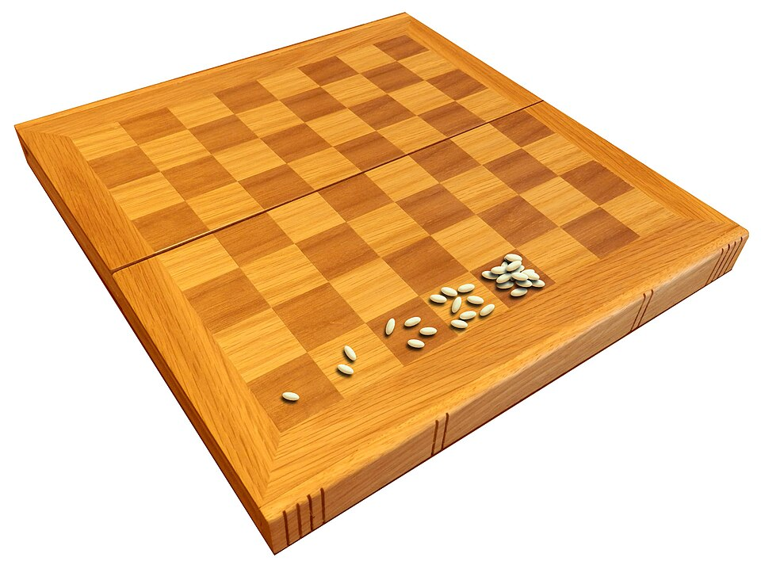
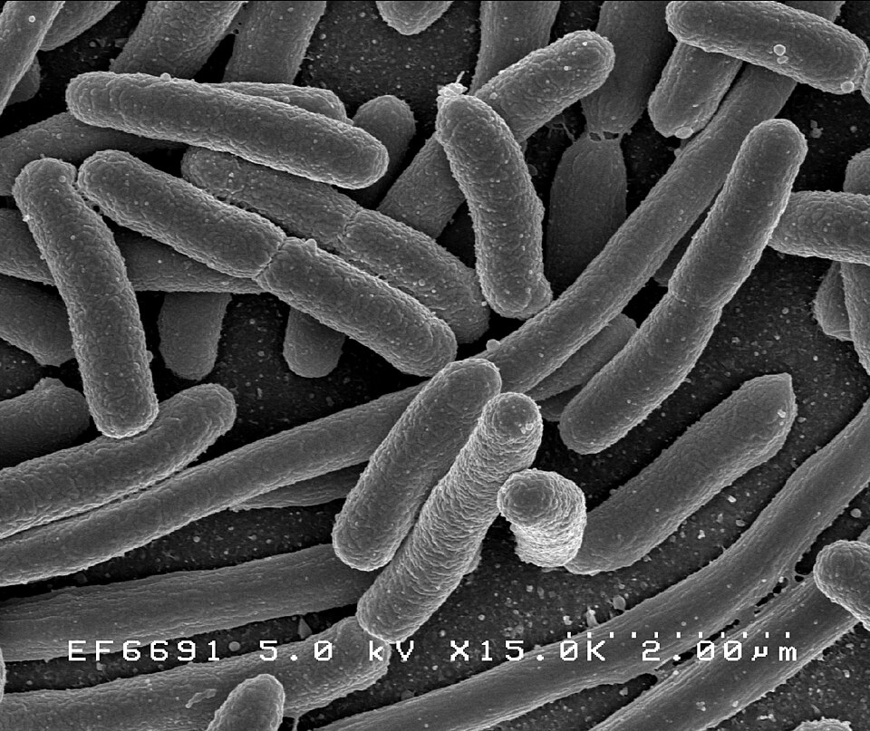

2⁻³ = 1/8 f(x) = 3 × 2^x → f(4) = 48 3 × 2^x = 96 → x = 5
Those three lines are this lesson in miniature. The first is a NEGATIVE exponent — it flips the 2 into a fraction. The second is function notation: a machine named f that turns hours into bacteria counts. The third is an equation we solve backwards: not "what do you get?" but "what power do you need?" By the end of this lesson, all three will feel as natural as 2 × 2 = 4.
Why do people care? Because exponential growth runs the world: bacteria multiply, rumors spread, videos go viral, savings grow, and computer chips get faster — all by multiplying by the same factor over and over. Grown-ups say "growing exponentially" whenever something explodes. After this lesson, you'll know the exact math behind that word — and you'll be able to predict it, run it backwards, and prove things about it.
This is the honors version of the lesson, so we go further than just computing answers. You'll solve equations with the unknown up in the exponent, find hidden growth factors from clues, compare exponential growth to linear AND quadratic growth, and explain WHY the patterns work — with every single step shown.
In this lesson, you will:
- 1.Power up your exponents — zero powers, negative powers, and the three exponent laws
- 2.Give the doubling machine a name: the function f(x) = a × 2^x
- 3.Sort patterns into three families: linear, exponential, and (peek!) quadratic
- 4.Find the growth factor — even from two snapshots that aren't neighbors
- 5.Use the formula f(x) = a × b^x, then SOLVE it for x, for a, and for both
- 6.Time-travel backwards with division and negative exponents
- 7.Master the halving machine: exponential decay with honest fractions
- 8.Dodge the six classic mistakes (including the ones honors students make!)
- 9.Prove it with 100 practice problems at the end
How to use this lesson: Read the sections in order — every new idea is built from the idea before it, and every worked example shows EVERY step with the reason for the move. Keep a pencil and paper next to you, and try every "Your Turn" box before peeking. Ready? Let's go!
📸 Pictures

The wheat and chessboard puzzle: put 1 grain on the first square, 2 on the next, then 4, 8, 16... By the last square you'd need more than 18 quintillion grains in total! See source ↓

E. coli bacteria seen through a microscope. With plenty of food, each one can split in two about every 20 minutes. That's exponential growth! See source ↓
🗺️ Your lesson map
Exponent Power-Ups — Zero, Negatives, and the Three Laws 🧩Lesson 2
The Doubling Machine Gets a Name — f(x) = a × 2^x 🎯Lesson 3
Three Families — Linear, Exponential, and (Peek!) Quadratic 🔍Lesson 4
The Growth Factor — and the Percent Connection ⚡Lesson 5
The Formula f(x) = a × b^x — Predict, Then SOLVE 🌟Lesson 6
Time Travel — Dividing Backwards, and Why f(−2) Makes Sense 🛠️Lesson 7
The Halving Machine — Exponential Decay with Honest Fractions ⚠️Lesson 8
Watch Out! Six Classic Mistakes (Honors Edition) 🧠Lesson 9
Review — The Big Picture 🏋️Practice Problems
100 problems to try ✅Answer Key
Check your work
📚 Picture Sources
- Picture 1 · Wheat and chessboard problem. By McGeddon. CC BY-SA 4.0. From Wikimedia Commons: https://commons.wikimedia.org/wiki/File:Wheat_and_chessboard_problem.jpg
- Picture 2 · E. coli Bacteria (7316101966). By NIAID. Public domain. From Wikimedia Commons: https://commons.wikimedia.org/wiki/File:E._coli_Bacteria_(7316101966).jpg

.jpg){kind=link}